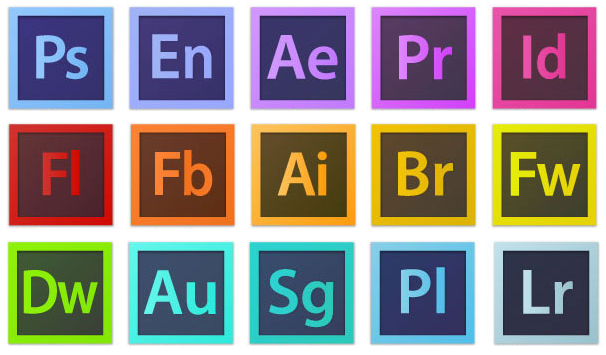
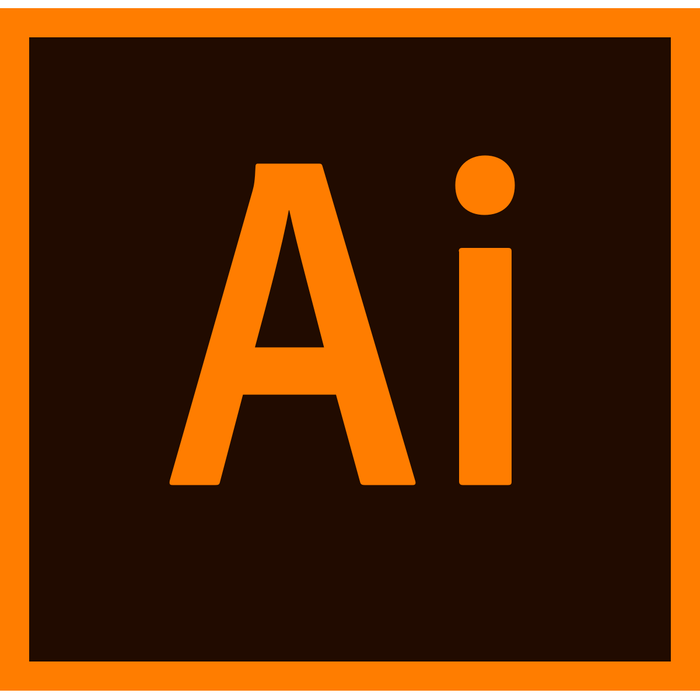
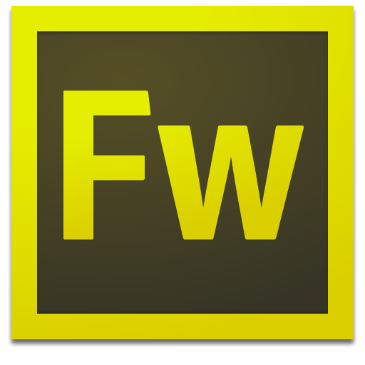
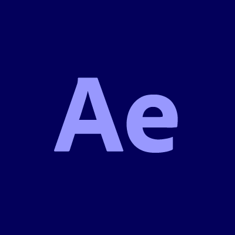

Free Software
Home
Software
Editing
Office
Recording
APLIKASI EDITING

Adobe Collection Jika kita mendengar nama Adobe, pasti kita sering menggunakannya. Saat Anda membuka file dalam bentuk pdf, Anda menggunakan aplikasi satu ini, demikian juga jika Anda ingin menyimpan file dalam bentuk pdf. Adobe merupakan perusahaan perangkat lunak dalam bidang video, animasi, grafis dan juga pengmbangan website.
1. Adobe Photoshop Produk Adobe yang terkenal diantaranya adalah Photoshop yang merupakan perangkat lunak untuk pengolahan foto atau gambar. Photoshop adalah market leader terbaik untuk pengolahan foto. Setidaknya ada banyak sekali versi dari Photoshop yang bisa kita gunakan saat ini. Saat ini ada 13 versi dari Photoshop yang bsa kita gunakan dan versi terakhir adalah versi 13 dengan nama Adobe Photoshop CS6. Menggunakan perangkat ini memang sangat membantu fotografer dan juga perusahaan periklanan untuk membuat foto atau gambar lebih sempurna dan professional.

2. Adobe Illustator Adobe Illustrator merupakan program editor grafis yang membantu pengguna untuk berbagai kebutuhan grafis. Anda bisa menggunakan Adobe Illustrator versi terbaru yaitu Illustrator CS6 yang merupakan generasi ke 16 yang diproduksi Adobe untuk produknya yang bernama Illustrator.
3. Adobe Premiere Pro Untuk menyunting video dengan mudah, Anda bisa menggunakan Adobe Premiere Pro. Produk dari Adobe ini merupakan program untuk penyuntingan video yang bisa dijalankan pada platform Windows dan Max OS untuk versi CS3. Untuk menjalankan program ini, Anda bisa memilih beberapa bahasa yang disediakan diantaranya bahasa Inggris, bahasa Jerman, bahasa Jepang, bahasa Spanyol, bahasa Italia dan juga bahasa Perancis.

4. Adobe FireWorks Dulunya kita mengenal atau mungkin sering menggunakan Makomedia Fireworks, namun sekarang kita menggunakan Adobe FireWorks. FireWorks merupakan aplikasi yang digunakan untuk memudahkan web designer saat membuat prototipe web maupun untuk membuat aplikasi interface. Dengan menggunakan aplikasi ini maka web designer jauh lebih cepat dan menyelesaikan pekerjaan mereka. Pada umumnya, pengguna bisa mengintegrasikan produk sat ini dengan produk Adobe lainnya seperti Adobe Flash dan Adobe Dreamweaver.

5. Adobe After Effects Adobe After Effects adalah salah satu software compositing yang populer dan telah digunakan secara luas dalam pembuatan video, multimedia, film dan web. After Effects terutama dipakai dalam penambahan efek khusus seperti efek petir, hujan, salju, ledakan bom, dan efek khusus lainnya. After Effects telah membantu para praktisi perfilman Hollywood dalam menghasilkan film-film dengan efek khusus yang spektakuler. Adanya kesamaan interface antara After Effects dengan keluarga Adobe yang lain seperti PhotoShop memberikan kemudahan dan kenyamanan dalam pemakaiannya. Integrasi After Effects bersama dengan PhotoShop, Illustrator, dan Premiere akan menghasilkan karya yang sebelumnya sulit dibayangkan untuk diwujudkan. Pada versi terbarunya, After Effects 6. Berbagai fitur yang lebih memudahkan bagi para profesional dalam menghasilkan efek khusus yang inovatif namun dengan tenggang waktu yang terbatas.